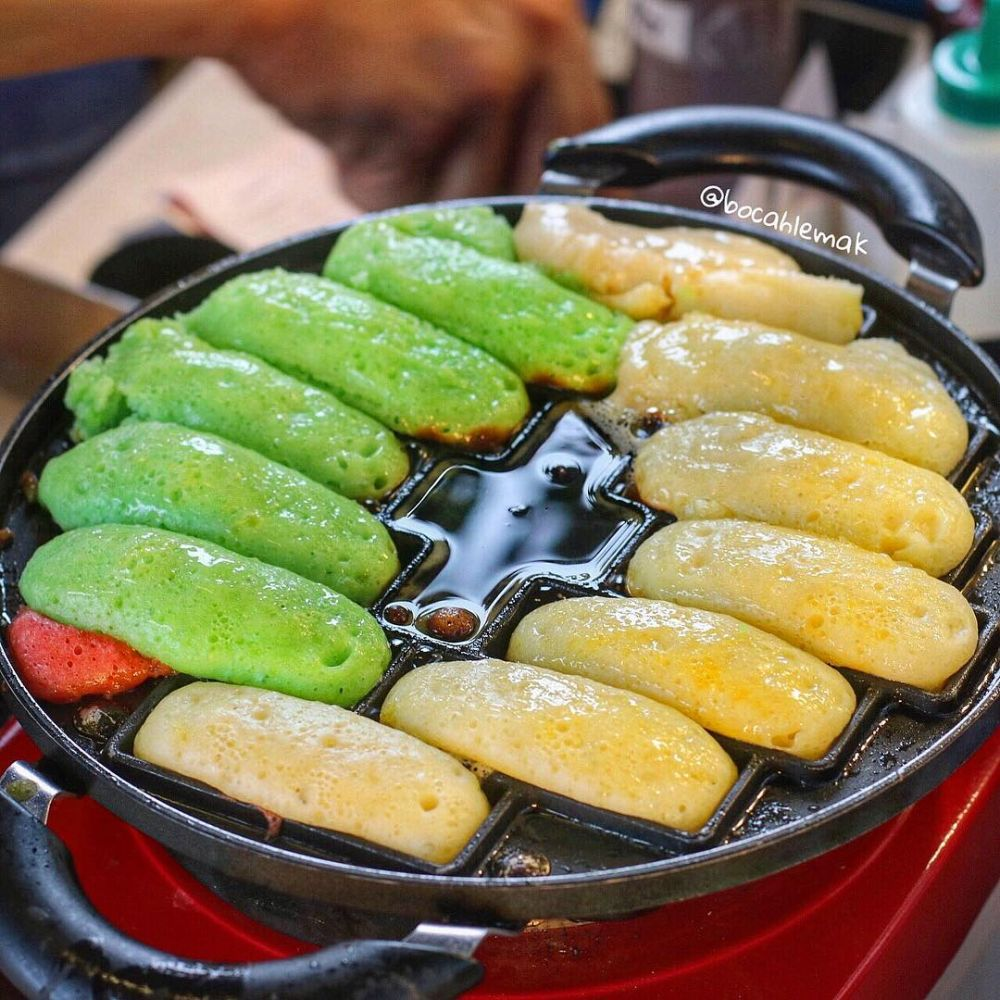

Kue Pukis

Bahan-bahan:
 200 gram tepung terigu
200 gram tepung terigu 3 butir telur ayam utuh
3 butir telur ayam utuh 2 kuning telur
2 kuning telur 300 mili santan
300 mili santanSantan adalah cairan berwarna putih susu yang berasal dari parutan daging kelapa tua yang dibasahi sebelum akhirnya diperas dan disaring.[1][2] Wujudnya yang tidak tembus cahaya dan rasanya yang kaya disebabkan oleh kandungan minyak, bagian terbesarnya adalah lemak jenuh. Santan kelapa adalah bahan makanan yang merakyat di Asia Tenggara, Asia Selatan, Karibia, dan Amerika Selatan.
Santan memiliki rasa lemak yang dapat digunakan sebagai penyedap rasa untuk membuat masakan menjadi gurih. Santan kelapa mengandung tiga nutrisi utama, yaitu lemak sebesar 33.80%, protein sebesar 6.10%, serta karbohidrat sebesar 5.60%. Hal tersebut sesuai dengan peryataan dalam sebuah penelitian yang menyatakan penambahan santan dapat menambah cita rasa dan nilai gizi, contohnya dalam abon. Santan akan menambah rasa gurih karena memiliki kandungan lemak yang besar.
 70 mili air hangat
70 mili air hangat 1 sendok makan garam
1 sendok makan garam 150 gram gula pasir
150 gram gula pasir 130 gram meisis cokelat
130 gram meisis cokelatCara Membuat:
- Potong atau parut keju sebagai topingnya. Kemudian campurkan ragi kue dengan air hangat dan mengaduknya sampai larut. Setelah larut secara sempurna maka sisihkan.
- Rebus santan, dengan diaduk terus agar santan tidak menggumpal atau pecah. Hal itu dilakukan sampai santan mendidih, setelah mendidih maka api dapat dimatikan dan biarkan santan menghangat.
- Kemudian masukkan ragi kue ke dalam adonan tersebut dan masukkan santan hangat. Aduk lagi hingga semua bahan tersebut tercampur merata atau tidak ada gumpalan sekalipun kecil. Setelah itu diamkan sekitar 15 sampai 25 menit.
- Siapkan cetakan kue pukis atau loyang di atas kompor dengan api kecil. Api besar wajib dihindari agar kue tidak gosong atau matang hanya sebagian.
- Setelah itu oles cetakan kue dengan margarine. Maka adonan dapat di tuang ke cetakan sampai hampir penuh dan tutup sebentar. Setelah beberapa menit buka penutup tersebut dan berikan taburan keju atau meises maupun topping lain sesuai selara. Kemudian tutup kembali sampai matang.
- Setelah kue pukis dirasa sudah matang, maka angkat kue cubit dari cetakan. Lalu sajikan kue pukis sebagai teman keluarga atau persiapan untuk jualan maupun menyambut hari penting.